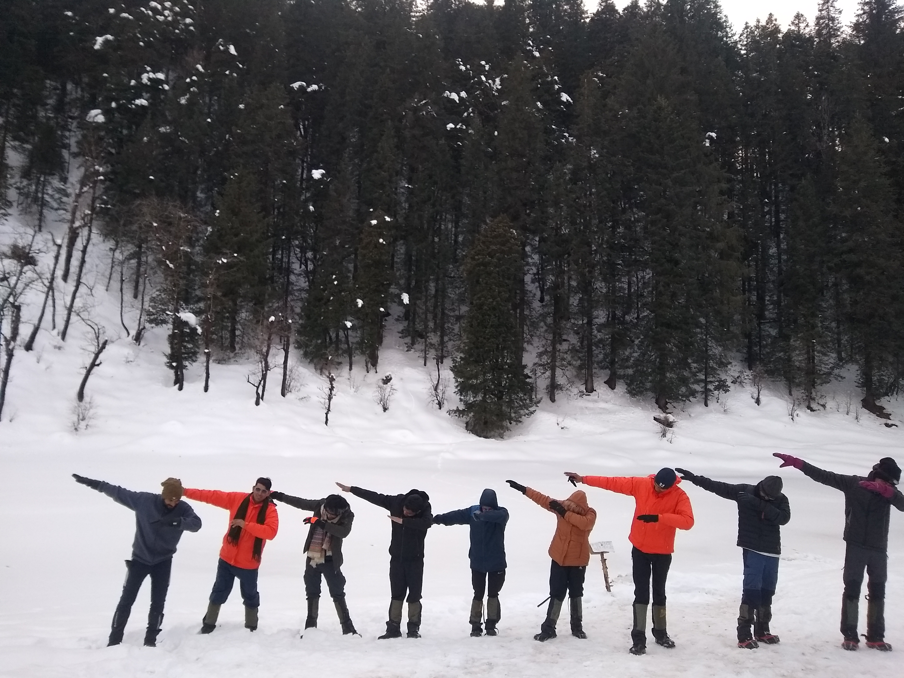

“Everyone wants to live on top of the mountain, but all the happiness and growth occurs while you are climbing it.” -Andy Rooney
Life is a trek & despite of your willingness, you have to keep moving forward in life to conquer your destiny.
Trekking is an outdoor activity of walking for more than a day. It is a form of walking, undertaken with the specific purpose of exploring and enjoying the scenery. Trekking could be a motive, It could be a commitment, an aim, an objective, a mission, a party, a social gathering. It could be a place where you find friends, and it could be a journey. It could be a slightest chance to save our future generation from losing the nature lovers, mother earth holding within. It can be shortened or extended as per the desire of trekkers.
Trekking is more challenging than hiking since it tests one's ability, endurance and their mental as well as psychological capacity. There are many different ways to do a trek and trekking culture often varies from country to country. It usually takes place on trails in areas of relatively unspoiled wilderness.
Treks can be categorized in many terms according to seasons, altitude, difficulties, etcetera.
According to seasons, treks can be categorized as Summer Trek, Autumn Trek, Winter Trek.
According to altitude & difficulties, it can be categorized as Beginner level Treks, Moderate level Treks, Difficult level Treks & Extreme difficult level Treks.
Trekking can be viewed from two different points: as an intense exercise, or an amazing and unique learning experience. Personally, I would love to learn whatever, I can during my trek. In trekking, we have to face different difficulties and uncertainties, by overcome them we allow ourselves to enhance our knowledge, experience and the understanding of the world.
By involving in trekking, you can realize that how beautiful is nature and you will be grateful to live in a place like earth. You can see things differently. Some of the major importance of trekking are as follows:
Although, trekking is exciting and thrilling it comes with great risk depending on your choice of the trek. The risk can be minimized or avoided if you follow the instruction you are provided with. Some of the dangers which you may encounter during the treks are:-
Unexpected weather change, wildlife, bad footing, sunburn, not getting rescued, altitude sickness, dehydration. To avoid these risk you should be prepared for the worst. Bring gear and clothes to survive in bad weathers. Don't try to attract wildlife during your trek. They may be charming but they can bring you some unwanted problems.
Mountains areas are always cold and in such weather, people don't feel thirsty but the amount of fluid needed for your body should be fulfilled. Mosquitos can be very dangerous during your trek because sometime you must stay in tents where you can be bitten by mosquitos. To prevent it you should simply apply mosquito repellent cream in all uncovered part of your skin.
The most important thing you need to consider before continuing your trek is to give some information to the people you encounter during the trek like the staffs in a lodge. You should tell them when you will return back from there. There should be someone who knows that you are in trouble and needs to be rescued. When you are trekking to high altitude you should bring necessary medicines for altitude sickness.It doesn't matter how experienced trekker you are, there is always a possibility of getting sick.